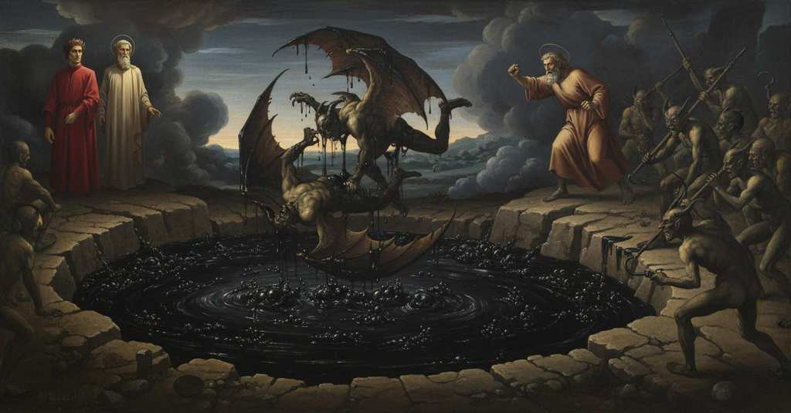

Inferno — Canto 22

The sinner Ciampolo cleverly tricks his demon captors and escapes into the boiling pitch, sparking a brawl that allows the narrator and Virgil to slip away during the chaos. ナヴァッラの汚職役人チャンポロが悪魔を欺いて瀝青に逃げ込み、仲間割れした悪魔たちの混乱に乗じて語り手たちはその場を離れた。
1
Io vidi già cavalier muover campo,
I have seen cavalry break camp before,
私はかつて見た 騎兵たちが陣を移すのを、
2
e cominciare stormo e far lor mostra,
and begin an assault and make their review,
そして襲撃を始め 閲兵するのを、
3
e talvolta partir per loro scampo;
and at times depart for their escape;
またある時は逃走のために出発するのを。
4
corridor vidi per la terra vostra,
I have seen scouts in your land,
私はお前たちの土地で見た 侵攻部隊を、
5
o Aretini, e vidi gir gualdane,
o Aretines, and seen raiding parties go,
おお アレティーニよ、そして略奪隊がゆくのを見た、
6
fedir torneamenti e correr giostra;
striking in tournaments and running a joust;
馬上試合を打ち合い 騎馬槍試合を走るのを。
7
quando con trombe, e quando con campane,
sometimes with trumpets, and sometimes with bells,
ある時は喇叭で、またある時は鐘で、
8
con tamburi e con cenni di castella,
with drums and with signals from castles,
太鼓で、そして城からの合図で、
9
e con cose nostrali e con istrane;
and with things of our own and with foreign ones;
我らの国のものや異国のものを使って。
10
né già con sì diversa cennamella
but never with so strange a reed-pipe
だがこれほど奇妙な笛の音で
11
cavalier vidi muover né pedoni,
did I see cavalry move, nor foot soldiers,
騎兵も歩兵も動くのを見たことはない、
12
né nave a segno di terra o di stella.
nor ship by a sign of land or of star.
船が陸や星の合図で進むことも。
13
Noi andavam con li diece demoni.
We went on with the ten demons.
我らは十人の悪魔たちと進んでいた。
14
Ahi fiera compagnia! ma ne la chiesa
Ah, what savage company! But in the church
ああ、なんと獰猛な一行か！ だが教会では
15
coi santi, e in taverna coi ghiottoni.
with the saints, and in the tavern with the gluttons.
聖者たちと、酒場では大食漢たちと。
16
Pur a la pegola era la mia ’ntesa,
Yet my attention was fixed on the pitch,
それでも私の注意は瀝青に向けられていた、
17
per veder de la bolgia ogne contegno
to see every condition of the ditch
その濠のあらゆる様子と、
18
e de la gente ch’entro v’era incesa.
and of the people who were burned within.
その中で苦しめられている者たちを見るために。
19
Come i dalfini, quando fanno segno
As dolphins, when they give a sign
イルカが、合図を送る時のように、
20
a’ marinar con l’arco de la schiena
to sailors with the arch of their back
船乗りたちに背中の弧をもって、
21
che s’argomentin di campar lor legno,
that they should prepare to save their ship,
彼らの船を救うよう促す、
22
talor così, ad alleggiar la pena,
so at times, to alleviate the pain,
そのように時折、苦しみを和らげるため、
23
mostrav’ alcun de’ peccatori ’l dosso
one of the sinners would show his back
罪人の誰かが背中を見せ、
24
e nascondea in men che non balena.
and hide it in less time than a lightning flash.
瞬く間にそれを隠した。
25
E come a l’orlo de l’acqua d’un fosso
And as at the edge of the water of a ditch
そして溝の水の縁に
26
stanno i ranocchi pur col muso fuori,
the frogs sit with only their snouts out,
蛙たちが鼻先だけを出して
27
sì che celano i piedi e l’altro grosso,
so that they hide their feet and the rest of their bulk,
足や体の大部分を隠しているように、
28
sì stavan d’ogne parte i peccatori;
so stood the sinners on every side;
罪人たちはあらゆる場所にいた。
29
ma come s’appressava Barbariccia,
but as Barbariccia drew near,
だがバルバリッチャが近づくと、
30
così si ritraén sotto i bollori.
so they drew back beneath the boiling pitch.
彼らは煮えたぎるものの中へと引っ込んだ。
31
I’ vidi, e anco il cor me n’accapriccia,
I saw, and my heart still shudders at it,
私が見た、そして今も心はそれに慄く、
32
uno aspettar così, com’ elli ’ncontra
one waiting so, as it happens
一人がそうして待つのを。ちょうど出くわすように
33
ch’una rana rimane e l’altra spiccia;
that one frog remains and the other spurts away;
一匹の蛙は残り、もう一匹は飛び去るように。
34
e Graffiacan, che li era più di contra,
and Graffiacan, who was nearest to him,
そしてグラッフィアカーネが、彼に最も近かったが、
35
li arruncigliò le ’mpegolate chiome
hooked him by his pitch-matted locks
その瀝青にまみれた髪を鉤で掴み、
36
e trassel sù, che mi parve una lontra.
and drew him up, so that he seemed to me an otter.
引きずり上げた、私にはカワウソのように見えた。
37
I’ sapea già di tutti quanti ’l nome,
I already knew the name of all of them,
私はすでに全員の名前を知っていた、
38
sì li notai quando fuorono eletti,
for I had noted them when they were chosen,
彼らが選ばれた時に書き留めたので、
39
e poi ch’e’ si chiamaro, attesi come.
and after they called to one another, I paid attention how.
そして彼らが呼び合った時、どう呼び合うか耳を澄ました。
40
«O Rubicante, fa che tu li metti
«O Rubicante, see that you set
「おおルビカンテ、お前が奴の背中に
41
li unghioni a dosso, sì che tu lo scuoi!»,
your talons on his back, so that you flay him!»,
爪を立てて、その皮を剥いでしまえ！」と、
42
gridavan tutti insieme i maladetti.
shouted all the accursed ones together.
呪われし者どもは皆一緒に叫んだ。
43
E io: «Maestro mio, fa, se tu puoi,
And I: «My master, if you can, arrange
そして私は、「我が師よ、もしできるなら、
44
che tu sappi chi è lo sciagurato
that you learn who the wretched one is
どうかこの不幸な者が誰なのか
45
venuto a man de li avversari suoi».
come into the hands of his adversaries».
敵の手に落ちたこの者が、誰なのか確かめてください」。
46
Lo duca mio li s’accostò allato;
My leader drew near to his side;
我が導き手はその傍らに近づき、
47
domandollo ond’ ei fosse, e quei rispuose:
he asked him whence he was, and that one replied:
どこから来たのか尋ねると、彼は答えた、
48
«I’ fui del regno di Navarra nato.
«I was born in the kingdom of Navarre.
「私はナヴァッラ王国に生まれました。
49
Mia madre a servo d’un segnor mi puose,
My mother placed me as a servant to a lord,
私の母は、ある領主の召使いに私を仕えさせ、
50
che m’avea generato d’un ribaldo,
she who had borne me to a scoundrel,
その領主は私を悪党から産ませたのでした、
51
distruggitor di sé e di sue cose.
a destroyer of himself and of his things.
自分自身とその財産を滅ぼした者です。
52
Poi fui famiglia del buon re Tebaldo;
Then I was of the household of the good king Theobald;
その後、私は善王テバルドの家臣となり、
53
quivi mi misi a far baratteria,
there I set myself to practicing barratry,
そこで私は汚職に手を染め始め、
54
di ch’io rendo ragione in questo caldo».
for which I render account in this heat».
その罪の償いをこの熱さの中でしています」。
55
E Cirïatto, a cui di bocca uscia
And Ciriatto, from whose mouth issued
するとチリアットが、その口からは
56
d’ogne parte una sanna come a porco,
on each side a tusk like a boar’s,
豚のように両側から牙が生えていたが、
57
li fé sentir come l’una sdruscia.
made him feel how one of them could rip.
その片方でいかに引き裂くかを彼に感じさせた。
58
Tra male gatte era venuto ’l sorco;
Among evil cats the mouse had come;
悪い猫たちの間に鼠はやって来た。
59
ma Barbariccia il chiuse con le braccia
but Barbariccia locked him in his arms
しかしバルバリッチャは彼を両腕で抱き込み、
60
e disse: «State in là, mentr’ io lo ’nforco».
and said: «Stay back, while I fork him».
そして言った、「私が奴を叉で刺す間、離れていろ」。
61
E al maestro mio volse la faccia;
And to my master he turned his face;
そして我が師に顔を向け、
62
«Domanda», disse, «ancor, se più disii
«Ask», he said, «further, if you more desire
「尋ねるがよい」と言った、「もしさらに
63
saper da lui, prima ch’altri ’l disfaccia».
to know from him, before another undoes him».
他の者が奴を八つ裂きにする前に、彼から知りたいのなら」。
64
Lo duca dunque: «Or dì: de li altri rii
The leader therefore: «Now tell: of the other culprits
そこで導き手は、「さて言え、他の罪人たちの中に
65
conosci tu alcun che sia latino
do you know any who is Italian
瀝青の下にいるラテン人（イタリア人）を
66
sotto la pece?». E quelli: «I’ mi partii,
under the pitch?». And that one: «I parted,
お前は知っているか？」。すると彼は、「私は別れたばかりです、
67
poco è, da un che fu di là vicino.
a short while ago, from one who was from near there.
少し前に、かの地の近くの者と。
68
Così foss’ io ancor con lui coperto,
Would that I were still covered with him,
私がまだ彼と共に隠れていさえすれば、
69
ch’i’ non temerei unghia né uncino!».
for I would not fear claw nor hook!».
爪も鉤も恐れはしなかったでしょうに！」。
70
E Libicocco «Troppo avem sofferto»,
And Libicocco, «We have endured too much»,
するとリビコッコが「我らは耐えすぎた」と
71
disse; e preseli ’l braccio col runciglio,
said; and seized his arm with the hook,
言い、鉤でその腕を掴むと、
72
sì che, stracciando, ne portò un lacerto.
so that, tearing, he carried off a strip of flesh.
引き裂いて、肉片を一つ持ち去った。
73
Draghignazzo anco i volle dar di piglio
Draghignazzo also wanted to get a grip
ドラギニャッツォもまた、掴みかかろうとした、
74
giuso a le gambe; onde ’l decurio loro
down on his legs; at which their decurion
下の方の脚に。そこで彼らの隊長は
75
si volse intorno intorno con mal piglio.
turned himself all around with a menacing look.
厳しい形相でぐるりと見回した。
76
Quand’ elli un poco rappaciati fuoro,
When they were somewhat pacified,
彼らが少し落ち着いた時、
77
a lui, ch’ancor mirava sua ferita,
to him, who still gazed at his wound,
未だ己の傷を見つめている彼に、
78
domandò ’l duca mio sanza dimoro:
my leader asked without delay:
我が導き手は間を置かずに尋ねた、
79
«Chi fu colui da cui mala partita
«Who was he from whom you say you made
「誰だったのか、お前が岸辺に来るために
80
di’ che facesti per venire a proda?».
a bad parting to come to the bank?».
不幸な別れをしたと言う相手は？」。
81
Ed ei rispuose: «Fu frate Gomita,
And he replied: «It was friar Gomita,
すると彼は答えた、「それは修道士ゴミタでした、
82
quel di Gallura, vasel d’ogne froda,
he of Gallura, vessel of every fraud,
あのガッルーラの者、あらゆる欺瞞の器で、
83
ch’ebbe i nemici di suo donno in mano,
who had his master’s enemies in his hand,
主君の敵をその手に握り、
84
e fé sì lor, che ciascun se ne loda.
and dealt with them so that each one of them praises it.
彼らそれぞれが満足するように計らったのです。
85
Danar si tolse e lasciolli di piano,
He took their money and let them go smoothly,
金を受け取り、彼らを円満に解放し、
86
sì com’ e’ dice; e ne li altri offici anche
so he says; and in other offices too
彼が言うように。そして他の役職においても
87
barattier fu non picciol, ma sovrano.
he was a barrator not small, but sovereign.
汚職役人として小者ではなく、第一人者でした。
88
Usa con esso donno Michel Zanche
With him consorts master Michel Zanche
彼と親しくしているのが、ドンノ・ミケーレ・ザンケ
89
di Logodoro; e a dir di Sardigna
of Logodoro; and to speak of Sardinia
ログドーロの。そしてサルディーニャの話を始めると
90
le lingue lor non si sentono stanche.
their tongues do not feel tired.
彼らの舌は疲れを知りません。
91
Omè, vedete l’altro che digrigna;
Alas, see the other one who is baring his teeth;
ああ、見てください、もう一人が歯を剥いています。
92
i’ direi anche, ma i’ temo ch’ello
I would say more, but I fear that he
私はさらに話したいのですが、恐らくは彼が
93
non s’apparecchi a grattarmi la tigna».
is not preparing to scratch my scabs».
私の瘡蓋を掻きむしろうと準備しているのが怖いのです」。
94
E ’l gran proposto, vòlto a Farfarello
And the great provost, turned to Farfarello
そして偉大な隊長は、ファルファレッロの方を向き、
95
che stralunava li occhi per fedire,
who was rolling his eyes to strike,
彼は打ちかかろうと目を剥いていたが、
96
disse: «Fatti ’n costà, malvagio uccello!».
said: «Get over there, wicked bird!».
言った、「あちらへ行け、悪しき鳥め！」。
97
«Se voi volete vedere o udire»,
«If you wish to see or to hear»,
「もしあなた方が見たいか聞きたいのなら」
98
ricominciò lo spaürato appresso,
the frightened one then began again,
怯えた者は続けて再び語り始めた、
99
«Toschi o Lombardi, io ne farò venire;
«Tuscans or Lombards, I shall make some come;
「トスカーナ人かロンバルディア人を、私は呼び寄せましょう。
100
ma stieno i Malebranche un poco in cesso,
but let the Malebranche stand back a bit,
しかしマレブランケどもには少し下がっていてほしい、
101
sì ch’ei non teman de le lor vendette;
so that they will not fear their vengeances;
彼らがその復讐を恐れないように。
102
e io, seggendo in questo loco stesso,
and I, sitting in this same spot,
そして私は、この同じ場所に座ったままで、
103
per un ch’io son, ne farò venir sette
for the one that I am, will make seven come
私一人に対して、七人を来させましょう
104
quand’ io suffolerò, com’ è nostro uso
when I whistle, as is our custom
私が口笛を吹いた時に、それは我々の習慣なのです
105
di fare allor che fori alcun si mette».
to do when one of us puts himself outside».
誰かが外に身を出す時にそうするように」。
106
Cagnazzo a cotal motto levò ’l muso,
Cagnazzo at this speech raised his snout,
カニャッツォはその言葉に鼻面を上げ、
107
crollando ’l capo, e disse: «Odi malizia
shaking his head, and said: «Hear the malice
頭を振りながら言った、「聞け、悪だくみを
108
ch’elli ha pensata per gittarsi giuso!».
that he has devised in order to throw himself down!».
下へ身を投げるためにあいつが考えた！」。
109
Ond’ ei, ch’avea lacciuoli a gran divizia,
At which he, who had snares in great abundance,
そこで、策略を豊富に持っていた彼は、
110
rispuose: «Malizioso son io troppo,
replied: «Too malicious am I indeed,
答えた、「私はあまりに悪だくみが過ぎます、
111
quand’ io procuro a’ mia maggior trestizia».
when I procure for my own a greater sadness».
私の仲間により大きな悲しみを仕向けるとは」。
112
Alichin non si tenne e, di rintoppo
Alichino did not hold back and, in defiance
アリキーノはこらえきれず、他の者たちに
113
a li altri, disse a lui: «Se tu ti cali,
of the others, said to him: «If you go down,
逆らって、彼に言った、「もしお前が下りるなら、
114
io non ti verrò dietro di gualoppo,
I will not come after you at a gallop,
俺は駆け足でお前を追いはしない、
115
ma batterò sovra la pece l’ali.
but I will beat my wings over the pitch.
だが瀝青の上で翼を打つだろう。
116
Lascisi ’l collo, e sia la ripa scudo,
Let the ridge be left, and let the bank be our shield,
崖を離れさせ、岸を盾とせよ、
117
a veder se tu sol più di noi vali».
to see if you alone are worth more than we are».
お前一人が我々全員より勝るか見るために」。
118
O tu che leggi, udirai nuovo ludo:
O you who read, you will hear of a new sport:
おお、汝読む者よ、汝は新たな遊戯を聞くだろう。
119
ciascun da l’altra costa li occhi volse,
each one turned his eyes to the other side,
各々は向こうの岸に目を向けた、
120
quel prima, ch’a ciò fare era più crudo.
he first, who to doing this was most unwilling.
それをすることに最も非情であった者さえもが最初に。
121
Lo Navarrese ben suo tempo colse;
The Navarrese chose his time well;
ナヴァッラ人は好機をうまく捉え、
122
fermò le piante a terra, e in un punto
he planted his feet on the ground, and in an instant
足裏を地に固め、一瞬のうちに
123
saltò e dal proposto lor si sciolse.
he leaped and from their purpose freed himself.
跳躍し、彼らの計画から逃れた。
124
Di che ciascun di colpa fu compunto,
At this each one was pricked by guilt,
これに各々は罪の意識に苛まれたが、
125
ma quei più che cagion fu del difetto;
but he most who was the cause of the failure;
とりわけ失敗の原因であった者がそうであった。
126
però si mosse e gridò: «Tu se’ giunto!».
therefore he moved and cried: «You are caught!».
ゆえに彼は動き出し、叫んだ、「捕まえたぞ！」。
127
Ma poco i valse: ché l’ali al sospetto
But it availed him little: for his wings could not
しかし、ほとんど役に立たなかった。翼は恐怖に
128
non potero avanzar; quelli andò sotto,
outpace the fear; that one went under,
追いつけなかった。あちらは下に潜り、
129
e quei drizzò volando suso il petto:
and this one flying pulled his chest up:
こちらは飛びながら胸を上へ向けた。
130
non altrimenti l’anitra di botto,
not otherwise the duck which, suddenly,
まさしく鴨が突然、
131
quando ’l falcon s’appressa, giù s’attuffa,
when the falcon nears, dives down below,
鷹が近づくと、下に潜るように、
132
ed ei ritorna sù crucciato e rotto.
and he returns upward, angry and beaten.
そして鷹は怒り、打ち負かされて上へ戻るのだ。
133
Irato Calcabrina de la buffa,
Calcabrina, enraged by the trick,
その策略に怒ったカルカブリーナは、
134
volando dietro li tenne, invaghito
flying, stayed behind him, eager
彼の後を飛んで追い、夢中になった
135
che quei campasse per aver la zuffa;
that the other might escape, so he could have a brawl;
あちらが逃げおおせて喧嘩ができるようにと。
136
e come ’l barattier fu disparito,
and as the barrator disappeared,
そして汚職者が姿を消すと、
137
così volse li artigli al suo compagno,
so he turned his talons on his companion,
すぐに鉤爪をその仲間に向け、
138
e fu con lui sopra ’l fosso ghermito.
and grappled with him above the ditch.
濠の上で彼と取っ組み合いになった。
139
Ma l’altro fu bene sparvier grifagno
But the other was indeed a fierce sparrowhawk
しかしもう一方は実に獰猛な雀鷹で
140
ad artigliar ben lui, e amendue
to claw him well, and both of them
巧みに彼を爪で掴み、そして二人とも
141
cadder nel mezzo del bogliente stagno.
fell into the middle of the boiling pond.
煮えたぎる沼の真ん中に落ちた。
142
Lo caldo sghermitor sùbito fue;
The heat was an immediate un-grappler;
熱がすぐに引き離し役となった。
143
ma però di levarsi era neente,
but still, to rise from there was nothing,
しかし立ち上がることは不可能だった、
144
sì avieno inviscate l’ali sue.
so limed were their wings.
それほど彼らの翼は膠着していたからだ。
145
Barbariccia, con li altri suoi dolente,
Barbariccia, grieving with his others,
バルバリッチャは、他の部下たちと共に悲しみ、
146
quattro ne fé volar da l’altra costa
made four of them fly from the other bank
四人を向こうの岸から飛ばさせ
147
con tutt’ i raffi, e assai prestamente
with all their hooks, and very quickly
全ての鉤を持って、そして大いに素早く
148
di qua, di là discesero a la posta;
on this side and that they descended to their posts;
こちらとあちらから持ち場へ下りていった。
149
porser li uncini verso li ’mpaniati,
they stretched their hooks toward the ensnared ones,
鉤を膠着した者たちに向け、
150
ch’eran già cotti dentro da la crosta.
who were already cooked within the crust.
彼らはすでに皮の内側まで煮えていたが。
151
E noi lasciammo lor così ’mpacciati.
And we left them thus entangled.
そして我々は、彼らをそのように揉めているままにしておいた。